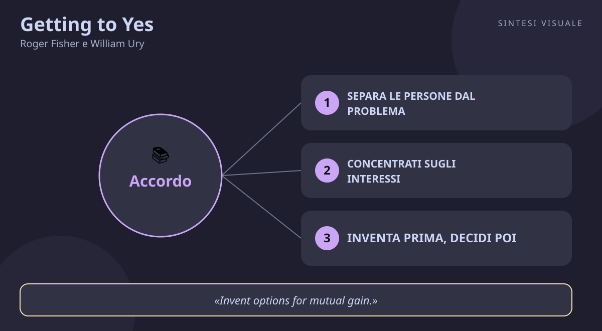

Getting to Yes
Roger Fisher e William Ury · Negoziazione
«Getting to Yes»
- Persone vs problema
- Interessi non posizioni
- Opzioni reciproche
- BATNA
🧭Introduzione
Roger Fisher insegnava diritto a Harvard e aveva negoziato crisi internazionali; William Ury, antropologo formatosi tra conflitti tribali e diplomazia, dirigeva con lui lo Harvard Negotiation Project, il laboratorio nato nel 1979 per studiare come si chiudono gli accordi veri. Da quelle aule, piene di diplomatici, sindacalisti e manager che litigavano sulle posizioni senza mai incontrarsi, nacque nel 1981 un libretto di appena 200 pagine destinato a diventare il manuale di negoziazione più letto al mondo: oltre 15 milioni di copie, più di 35 lingue, adottato nelle scuole, nelle aziende e nelle cancellerie di mezzo pianeta.
Perché conta oggi: ogni giorno negoziamo — lo stipendio, l'affitto, le ferie con i colleghi, le regole con i figli, il prezzo di un'auto usata. E quasi sempre cadiamo nella trappola del tira e molla: chi è più duro vince, chi cede per quieto vivere perde. Fisher e Ury dimostrano che esiste una terza via, la negoziazione sui meriti, che produce accordi più saggi, più rapidi e con le relazioni intatte.
A chi è utile: a chi chiede un aumento, a chi vende o compra, a chi gestisce un team, a genitori e partner che discutono ogni sera sulle stesse cose — e a chiunque esca dalle trattative con l'amaro in bocca, convinto che "o vinco io o vinci tu".
📘Riassunto
La scintilla centrale: smetti di contrattare sulle posizioni e negozia sui meriti: se separi le persone dal problema, scavi fino agli interessi veri, inventi opzioni per entrambi e giudichi con criteri oggettivi, puoi dire sì senza cedere e dire no senza rompere.
La struttura logica procede in quattro mosse, più una leva di riserva:
- Il rifiuto del tira e molla — la contrattazione sulle posizioni (duro o morbido che sia) produce accordi stupidi, spreca tempo e rovina i rapporti: serve un metodo diverso, la negoziazione di principio.
- Le quattro mosse — 1) separa le persone dal problema; 2) concentrati sugli interessi, non sulle posizioni; 3) inventa opzioni di reciproco vantaggio prima di decidere; 4) insisti su criteri oggettivi e indipendenti.
- La leva del potere vero — il BATNA, la migliore alternativa a un accordo negoziato: il tuo potere non sta nel tono di voce ma nella solidità di ciò che faresti se l'accordo saltasse.
- La coda pratica — cosa fare quando l'altro non gioca pulito, ha più potere, o gioca sporco: negozia anche le regole del gioco e non reagire alle provocazioni.
Il punto di svolta: il capitolo sugli interessi contro le posizioni. L'esempio delle due sorelle che litigano per un'arancia — una vuole la polpa, l'altra la scorza — mostra in una pagina che due posizioni incompatibili possono nascondere interessi perfettamente compatibili: dietro ogni posizione rigida c'è un interesse flessibile che aspetta di essere scoperto.
L'eredità oggi: il libro ha fondato la moderna didattica della negoziazione (il Program on Negotiation di Harvard), ha coniato il termine BATNA entrato nel linguaggio di manager e diplomatici, e resta il testo base da cui discendono anche i successori più duri come Chris Voss — che ne rovescia il tono ma ne conferma l'impianto.
💡Concetti chiave
- Separa le persone dal problema: tratta il rapporto e la sostanza su due binari diversi, così un disaccordo non diventa un'offesa.
- Concentrati sugli interessi, non sulle posizioni: la posizione è ciò che dichiari, l'interesse è il perché lo vuoi — ed è lì che si trova l'accordo.
- Inventa prima, decidi poi: sospendi il giudizio e genera molte opzioni, perché la prima soluzione è quasi mai la migliore.
- Insisti su criteri oggettivi: invece di piegarti alle pressioni, appoggiatevi entrambi a standard esterni e indipendenti.
- Conosci e rafforza il tuo BATNA: la tua forza è la tua migliore alternativa se la trattativa salta — definiscila prima di sederti al tavolo.
- Duro sul problema, morbido con le persone: attacca il merito con rigore e proteggi la relazione con rispetto, sempre.
📖1. Separa le persone dal problema
- Definizione ogni negoziazione corre su due binari intrecciati: la sostanza (prezzo, tempi, condizioni) e la relazione (emozioni, percezioni, orgoglio). Se i due binari si confondono, ogni obiezione sui numeri suona come un attacco personale e l'orgoglio congela l'accordo.
- Esempio due colleghi litigano sul budget del trimestre, ma sotto c'è la paura di perdere peso agli occhi del capo. Finché discutono solo di cifre, nessuno cede; quando uno dice "mi sembra che ti prema non sfigurare con la direzione, è così?", la tensione cala e si può ragionare.
- Come applicarlo (a) ascolta davvero prima di rispondere, e riformula ciò che l'altro ha detto; (b) nomina le emozioni senza giudicarle ("vedo che questa scadenza ti preoccupa"); (c) parla di te con frasi in prima persona e attacca il problema, non la persona ("questa tempistica non funziona" invece di "sei inaffidabile").
- Errore comune usare concessioni sulla sostanza per comprare la simpatia ("ti faccio lo sconto così non ti arrabbi"): rovini l'accordo e non risolvi il rapporto.
- Collegamento l'ascolto attivo di Carl Rogers e la "negoziazione empatica" di Chris Voss (Never Split the Difference): anche l'FBI prima calma le persone, poi tratta i termini.
📖2. Concentrati sugli interessi, non sulle posizioni
- Definizione la posizione è la richiesta rigida ("voglio 145.000 euro" / "la festa si fa a casa mia"); l'interesse è il bisogno sottostante (mutuo e asilo da pagare, sentirsi riconosciuti; non voler guidare di notte). Le posizioni si scontrano, gli interessi spesso si incastrano.
- Esempio datore e candidata litigano sullo stipendio: lei chiede 40.000, lui offre 35.000. Scavando emerge che a lei serve flessibilità per i figli e a lui continuità senza nuove assunzioni: chiudono a 36.000 più due giorni di smart working e un bonus legato a obiettivi. Entrambi ottengono ciò che contava davvero.
- Come applicarlo (a) chiedi "perché?" dietro ogni richiesta, tua e altrui, almeno due volte; (b) elenca i tuoi interessi multipli in ordine di priorità prima di entrare in trattativa; (c) se l'altro non si apre, ipotizza ad alta voce ("immagino che la scadenza conti perché il consiglio si riunisce quella settimana, giusto?") e fatti correggere.
- Errore comune innamorarsi della propria posizione e difenderla per orgoglio anche quando un'alternativa servirebbe meglio i tuoi stessi interessi.
- Collegamento Abraham Maslow e i bisogni umani fondamentali (sicurezza, appartenenza, riconoscimento, controllo) che Fisher e Ury indicano come interessi universali da cercare in ogni trattativa.
📖3. Inventa prima, decidi poi
- Definizione la maggior parte delle trattative si chiude sulla prima soluzione accettabile perché giudicare troppo presto uccide la creatività. La regola è separare l'invenzione dalla decisione: prima allarga la torta con molte opzioni, poi dividila.
- Esempio un fornitore e un cliente litigano sul prezzo di una fornitura. Invece di spaccare la differenza, inventano: pagamento a 30 giorni con sconto, ordine pluriennale con prezzo bloccato, penale per ritardi contro premio per anticipi. Alla fine il prezzo resta, ma il pacchetto vale il doppio per entrambi.
- Come applicarlo (a) ritaglia 10 minuti di brainstorming puro senza critiche né impegni; (b) cerca scambi tra temi che a te pesano poco e all'altro molto (tempi contro prezzo, flessibilità contro continuità); (c) inventa varianti della stessa intesa (più lunga o più corta, più ampia o più stretta) e solo dopo valuta.
- Errore comune credere che la torta sia fissa ("ciò che guadagno io lo perdi tu") e correre al compromesso a metà strada, che spesso scontenta entrambi.
- Collegamento il brainstorming di Alex Osborn (sospendere il giudizio moltiplica le idee) e il pensiero laterale di Edward de Bono; in economia, è la logica dei giochi a somma positiva contro quelli a somma zero.
📖4. Insisti su criteri oggettivi
- Definizione quando gli interessi non bastano a chiudere, non decidere in base a chi urla più forte o resiste più a lungo: ancorate la scelta a standard esterni, equi e verificabili da entrambi — valore di mercato, precedenti, perizie, norme professionali.
- Esempio compri un'auto usata: invece di partire da "la voglio a 8.000" contro "la vendo a 11.000", portate entrambi le quotazioni dei listini dell'usato e due annunci di auto simili. La discussione diventa "quale listino usiamo?" invece di "chi cede per primo?" — e il prezzo si fissa quasi da solo.
- Come applicarlo (a) prima di negoziare raccogli 2-3 standard indipendenti; (b) proponi di ragionare insieme su quale criterio è più equo, senza imporre il tuo; (c) se l'altro rifiuta il tuo standard, chiedi quale standard troverebbe convincente e perché.
- Errore comune usare i criteri come arma ("il listino dice che ho ragione io, punto") invece che come ricerca comune di equità: così si ricade nella gara di volontà con un vestito nuovo.
- Collegamento la teoria della giustizia di John Rawls (accordi equi sotto un velo di imparzialità) e la pratica degli arbitrati, dove un terzo indipendente decide proprio in base a criteri esterni.
📖5. Conosci e rafforza il tuo BATNA
- Definizione BATNA significa Best Alternative To a Negotiated Agreement, la migliore alternativa se l'accordo salta. È il tuo vero potere: se sai cosa farai senza questo accordo, sai anche quando conviene firmare e quando alzarsi e andarsene.
- Esempio cerchi casa e tratti su un solo appartamento senza alternative: accetterai quasi tutto. Se invece hai visionato tre case e hai una seconda offerta credibile, tratti con calma e spesso ottieni uno sconto — senza alzare la voce, solo perché puoi davvero dire di no.
- Come applicarlo (a) prima di ogni trattativa importante scrivi nero su bianco la tua migliore alternativa; (b) lavora per rafforzarla (un secondo preventivo, un secondo colloquio, un piano B concreto); (c) stima anche il BATNA dell'altro: più è debole il suo, più margine hai tu.
- Errore comune fissarsi una soglia rigida e segreta ("non sotto i 38.000") invece di ragionare sul BATNA reale: così si rifiutano accordi creativi migliori dell'alternativa, o si accettano accordi peggiori per paura.
- Collegamento la teoria dei giochi e il concetto di "opzione esterna" (outside option); Nassim Taleb direbbe che un buon BATNA è antifragilità negoziale: più alternative hai, più guadagni dal disordine della trattativa.
📖6. Duro sul problema, morbido con le persone
- Definizione è la sintesi operativa di tutto il metodo: sii inflessibile nel difendere i tuoi interessi legittimi e allo stesso tempo irreprensibile nel trattare l'altro con rispetto. La fermezza sta sui contenuti, la gentilezza sulle persone — mai il contrario.
- Esempio il cliente urla per un ritardo nella consegna. Invece di urlare a tua volta o di svendere uno sconto per calmarlo, rispondi: "Hai ragione a essere arrabbiato, il ritardo è nostro. Vediamo insieme come recuperare: consegna parziale domani e saldo venerdì con penale a nostro carico, ti va?". Hai protetto i margini senza umiliare nessuno.
- Come applicarlo (a) quando l'altro attacca te invece del problema, riformula: "stiamo entrambi cercando di chiudere in tempo, giusto?"; (b) se usa tattiche scorrette, nominale con calma e negozia le regole ("preferirei decidere sui dati, non sulle scadenze a sorpresa"); (c) non reagire alle provocazioni: fai una pausa e torna sui meriti.
- Errore comune confondere morbidezza con debolezza (cedere sui contenuti per piacere) oppure durezza con efficacia (alzare i toni per imporsi): entrambi distruggono valore e relazioni.
- Collegamento il Tao Te Ching ("il morbido vince sul duro") e la leadership situazionale di Daniel Goleman (Intelligenza emotiva): l'autocontrollo del negoziatore è la stessa autoregolazione emotiva del leader efficace.
💬Citazioni da ricordare
"Separate the people from the problem." — la prima regola del metodo: il disaccordo sui contenuti non deve mai diventare un conflitto tra persone. (principio 1)
"Focus on interests, not positions." — sotto ogni richiesta rigida c'è un bisogno flessibile: è lì, e non sulla posizione dichiarata, che si costruisce l'accordo. (principio 2)
"Invent options for mutual gain." — prima di dividere la torta, allargala: le soluzioni creative nascono solo se l'invenzione precede la decisione. (principio 3)
🌍Esempi di oggi
- L'aumento di stipendio. Chiedi "voglio 3.000 euro in più" e il capo dice "impossibile": scontro tra posizioni. Se sposti il discorso sugli interessi — per te riconoscimento e mutuo, per lui budget e continuità — spuntano opzioni: bonus legato a obiettivi, revisione tra sei mesi, formazione pagata. Stessa trattativa, esito diverso.
- Le vacanze in famiglia. Lei vuole il mare, lui la montagna: posizioni incompatibili. Gli interessi veri sono riposo per lei e movimento per lui, più un budget limitato: la soluzione è una località di lago con spiaggia e sentieri, una settimana invece di dieci giorni. Nessuno ha "vinto", entrambi tornano contenti.
- Il preventivo dell'idraulico. "Le faccio 900 euro, prendere o lasciare" contro "ne ho solo 600": gara di volontà. Chiedete insieme il listino della casa madre per i pezzi e due preventivi di colleghi per la manodopera: il prezzo equo emerge dai criteri oggettivi, e la fiducia resta intatta per i lavori futuri.
🛠️Azioni pratiche
- Scrivi il tuo BATNA (15 minuti, una volta): pensa alla prossima trattativa che ti aspetta (stipendio, acquisto, ferie, affitto) e scrivi su un foglio la tua migliore alternativa se saltasse tutto — e una mossa concreta per rafforzarla entro sette giorni (un secondo preventivo, una seconda candidatura, un piano B).
- Traduci una posizione in interessi (10 minuti): prendi un disaccordo aperto in casa o al lavoro e riscrivilo in due colonne: "posizioni dichiarate" contro "interessi veri" (tuoi e dell'altro). Poi formula una domanda con "perché" da porre all'altro al prossimo incontro.
- Porta un criterio oggettivo (20 minuti): per la stessa trattativa, raccogli uno standard esterno (listino, dato di mercato, precedente, norma) e prepara la frase per proporlo: "che ne dici se ragioniamo insieme su quale criterio usare, invece di tirare ognuno dalla sua parte?".
💎Da portare a casa
Non serve essere più duri o più morbidi: serve essere più lucidi — separa le persone dal problema, punta agli interessi veri e lascia che a decidere siano criteri equi, non la paura o l'orgoglio.
💬Approfondimento in chat
Rispondi con il numero (1-6) del concetto che vuoi espandere ulteriormente, oppure con un tema a cui vuoi dedicare il prossimo libro: public speaking, vendite, persuasione, stress, emozioni, carriera...
🖼️In un colpo d’occhio

Tocca l’immagine per ingrandirla.